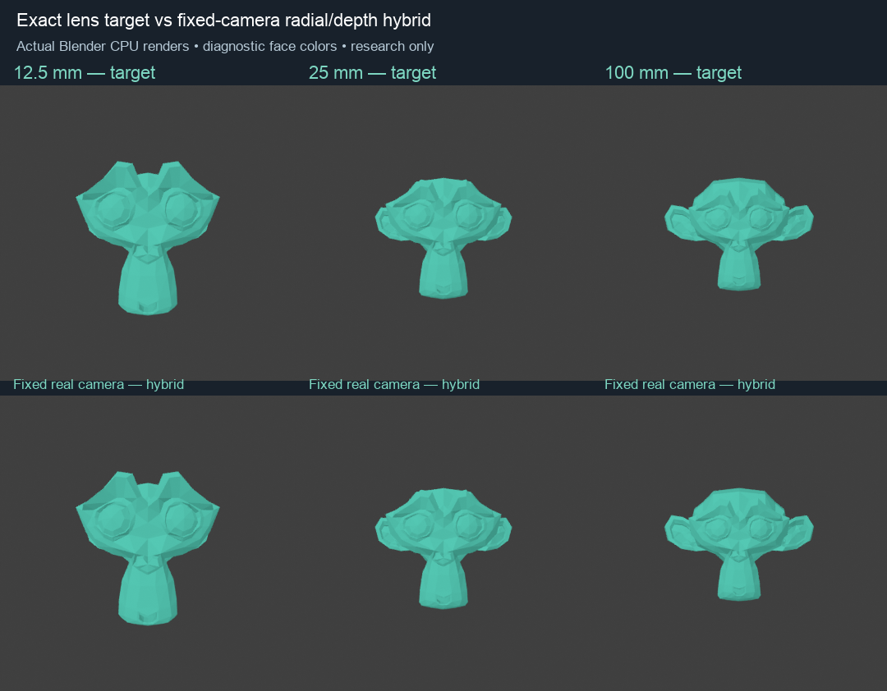
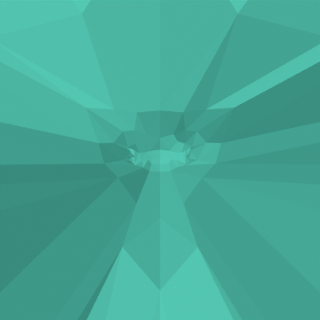

Research checkpoint, not an installed fix. CamKeys 60d2015/schema15 remains installed with its known popping. The bounded schema16 experiment was withdrawn because it changed the requested lens appearance.

Target renders use the simulated lens camera only inside a disposable reference fixture. Hybrid renders deform the mesh and keep the real 50 mm camera fixed. Constant source-face emission colors isolate projection; these are not curvature, lighting or shader parity tests.
At 23.7427 mm versus 50 mm, the previous common depth-offset equation had no real root. The affine-depth hybrid admits k = 1.53093, holds the focus depth at 1.29401, and keeps every vertex on its exact target ray. Float64 projected-coordinate error is below 5e−16; relative signed fan-volume error is below 2e−13.
An open Head patch has a closure-dependent signed fan volume, not a unique enclosed physical volume. Partial falloff and real-time float32 execution remain unqualified.
| Lens / real 50 mm | Admitted | No positive root | Projection-plane crossing |
|---|---|---|---|
| 2.5 mm | 12 | 0 | 168 |
| 12.5 mm | 171 | 0 | 9 |
| 25 mm | 180 | 0 | 0 |
| 100 mm | 127 | 53 | 0 |
| 250 mm | 122 | 58 | 0 |
36 azimuths × five elevations × five ratios, recorded pre-effect geometry, fixed focus distance. A tiny view perturbation loses no admitted roots in these samples, but 134 samples have multiple roots. This does not prove full-orbit continuity. No viewport speed is inferred from these offline calculations.

Under the current fixed-framing pinhole model, the target projection plane can cut through the character. A noncentral point on that plane requests an infinite screen coordinate. Radial movement cannot represent that entire unclipped mesh with finite coordinates and positive camera depth.
Exact visible pixels may still permit clipping/reconstruction of invisible geometry. That is the next research direction, with topology, volume, continuity and real-time cost unresolved. The real camera and character framing will not be moved as a workaround.
Scaling along exact target rays recovers 66 anchored-root failures, but its signed-volume normalization reaches 6.43× in another pose. It is also unsuitable for installation: a valid equation can still create the large collective displacement being reported. Numeric evidence.
Expand the radial-depth family beyond its single anchored-thickness parameter; establish a continuous solution across ordinary views and open-region states; investigate exact visible-image handling at the singular boundary. Only then qualify a retained Geometry Nodes implementation with existing falloff, shared companion normalization and update scheduling. The reported close-zoom GPU slowdown remains unproven and unfixed.
Summary · Orbit results · Recorded Uraraka probe · Closed-mesh probe · Render metadata · Overview